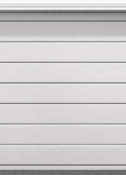

<!-- Menu lateral para perfil de usuario -->
<ion-menu side="start" contentId="main-content">
  <ion-header>
    <ion-toolbar>
      <ion-title>Hola, Nombre de usuario </ion-title>
      <!-- Personaliza con el nombre del usuario -->
    </ion-toolbar>
  </ion-header>
  <ion-content class="ion-padding">
    <!-- Foto de perfil -->
    <ion-avatar style="margin: 10px auto; display: block">
      
      <!-- Reemplaza con la URL de la foto del usuario -->
    </ion-avatar>

    <!-- Botón para acceder a la página de perfil -->
    <ion-item button routerLink="/perfil">
      <ion-icon name="person" slot="start"></ion-icon>
      <ion-label>Perfil de Usuario</ion-label>
    </ion-item>

    <!-- Botón para acceder a la página de contactos -->
    <ion-item button routerLink="/contactos">
      <ion-icon name="people" slot="start"></ion-icon>
      <ion-label>Contactos</ion-label>
    </ion-item>

    <div>
      <!-- Botones al final: Cerrar sesión y Salir -->
      <ion-button expand="block" color="danger">
        <ion-icon name="log-out" slot="end"></ion-icon>
        Cerrar Sesión
      </ion-button>
      <ion-button expand="block" color="medium">
        <ion-icon name="close" slot="end"></ion-icon>
        Salir
      </ion-button>
    </div>
  </ion-content>
</ion-menu>

<div class="ion-page" id="main-content"></div>

<ion-app>
  <ion-router-outlet></ion-router-outlet>

  

  <ion-tabs>
    <ion-tab-bar slot="bottom" color="light">
      <ion-tab-button (click)="navBiblioteca()" tab="biblioteca">
        <ion-icon name="library-outline"></ion-icon>
        Biblioteca
      </ion-tab-button>
      <ion-tab-button (click)="navRegistrar()" tab="registrar">
        <ion-icon name="document-text-outline"></ion-icon>
        Registrar
      </ion-tab-button>
      <ion-tab-button (click)="navComunidad()" tab="comunidad">
        <ion-icon name="earth-outline"></ion-icon>
        Comunidad
      </ion-tab-button>
      <ion-tab-button (click)="navBuscar()" tab="buscar">
        <ion-icon name="search"></ion-icon>
        Buscar
      </ion-tab-button>
    </ion-tab-bar>
  </ion-tabs>
</ion-app>
